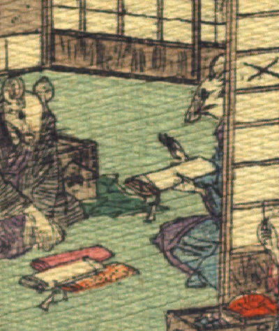

2体の鼠。向って左の鼠は紫色の着物に黒い羽織をまとい、座っている。膝の前に反物が置かれ、背に黒い箱と緑色の包布が置かれており、呉服屋と思われる。右の鼠は、紫色と青色の着物をまとい座っている。片手に反物を持ち、もう1体の鼠に話しかけている。この家の女と思われる。いずれも手は人間のものである。
著作者：J.Dautremer／出典：親書誌：U426_nichibunken_0111：Le mariage de la souris／日付：2006／資源識別子：U426_nichibunken_0111_0005_0001
Copyright (c)2010- International Research Center for Japanese Studies, Kyoto, Japan. All rights reserved.